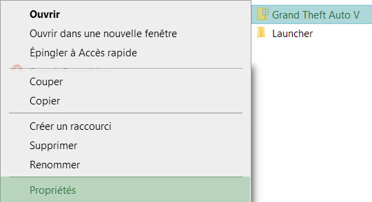
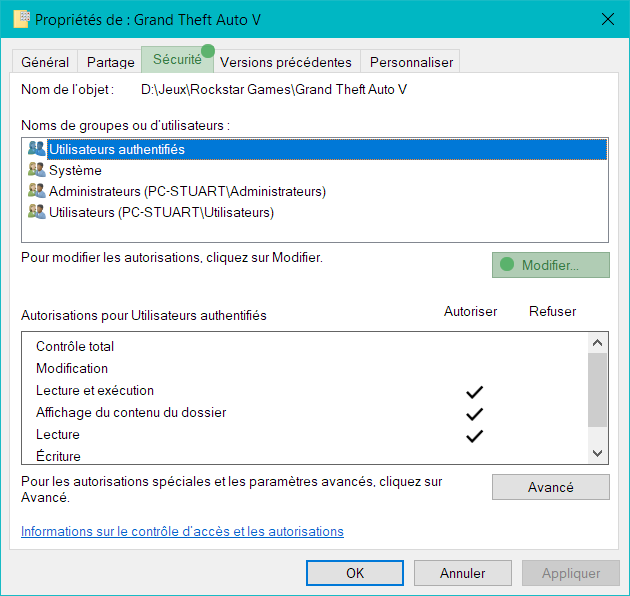
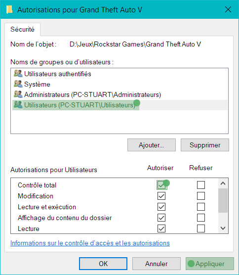

Si les autorisations utilisateur du dossier du jeu ne sont pas suffisante certains fichiers peuvent être bloquées et ne seront pas utilisable par le jeu.
Lors de l'installation de certains mods et certains autres événements peuvent modifier ces autorisations, vérifier donc régulièrement que vous avez les autorisations nécessaires :
- Faites un clic-droit sur le dossier du jeu ( Cela ne fonctionnera pas sur un raccourci vers le dossier) puis cliquez sur "Propriétés"

- Allez sur l'onglet "Sécurité", puis cliquez sur "Modifier..."

- Sélectionnez "Utilisateurs (...)", puis cochez la case "Autoriser" pour le "Contrôle total" et cliquez sur "Appliquer" (si la case est déjà cochée, décochez puis recochez la case)
